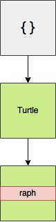
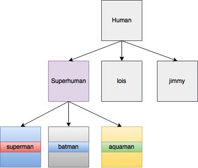

Week 04 Notes
JS Ninja Chapter 8: Forms
A search bar
Form elements:
Why put things in a form rather than just grouping the elements together?
How does this form know to press that button when the enter key is pressed?
Action attribute: the url that the form will be submitted to
Name attribute: used to access the information inside of it
Form Properties and Methods
form.submit() will submit the form automatically (but doesn't trigger submit event)
form.reset() will reset the form
form.action property can set the action attribute of a form
Form events
Focus: (when cursor is placed or when it is tabbed to)
Blur: when focus is moved away
Change: when something is actually changed
Submits the form to url, unless you intercept it with js to do something else.
Retrieving and Changing Values From a Form
value property retrieves text in a field
Form Controls
input
select: drop down
textarea
button
Inputs
text
password
checkbox
Radio Buttons
Hidden inputs: for stuff the user doesn't need to fill out again.
File input: lets user add a file
number
select: drop downs
Form validation
Front end validation is for making a better user experience. Server side validation is for actually making sure everything is correct.
You can add validation in the html, but this is not the best way since it is not consistent across browsers.
Add event listeners to check the form as the user types, not just when it is submitted
Disable the submit button if there are errors in the form.
JS Ninja Chapter 12: Object Oriented Programming
Encapsulation
Inner workings are kept hidden in the object, and only essential functions are exposed to user.
Polymorphism
The same processes can be used for different objects. Various objects have the same method, but also have the ability to override shared methods with a more specific implementation.
Inheritance
Taking features of one object and adding new features.
Classes
Classes define blueprint.
Constructor Functions
A function to create objects.
Javascript has some built in constructor functions for Object, Array, and Function. But you can also write your own constructor functions
ES6 Class Declarations
Now you can uses classes with Javascript
The Constructor Property
All objects have a constructor property that returns the constructor function that created it
Use constructor property to instantiate a copy of an object without having to refernce it directly.
Static Methods
Static methods are for by the class directly, rather than the instance of the class.
Protypal Inheritance
Prototype properties are shared by every instance of the class
The Prototype Property
Prototype property returns an object
Lets you add properties and methods to a class
ex: turtle.prototype
Prototype always refers to the instance that calls a method
getPrototypeOf()
What is a prototype?
Prototype should be used to add new properties and methods after the class has been declared. Use it to add things that will be the same for every instance of the class.
Never use arrays or objects as default value in a prototype.
Public and Private Methods
Methods and properties are public be default. They can ve queried directly and changed by assignment.
By creatign a variable inside the constructor function, it can't be accessed outside of that scope.
Use getter and setter methods to form closure over a variable and provide controlled access
Add these functions as methods to the class.
In these getter/setter functions, you can add filtering, for example, to make sure color is only set to a string
Inheritance
Every prototype has its own prototype, which inherits the properties of the previous one, creating a chain of inheritance.
The Object Constructor
All objects ultimately inherit from the the prototype of the object constructor function
All objects have built in methods that are inherited from the object prototype
Enumerable Properties
If a property is not enumerable, it won't show up when you try to loop through an object's properties.
Built in methods are usually not enumerable, user defined methods are usually enumerable.
Inheritance Using extends
Use extends to avoid polluting the more generic version of a class with a more specific version.
Polymorphism
A secret: Primitive values are actually objects in the background. That's how they have methods.
You can even override built in methods for the classes you create. For example, toString() is not that useful when applied to objects. You can write your own toString() method to do what you want it to do.
Adding Methods to Built In Objects
Cool, but frowned upon.
Monkey patching is when you modify built in object methods.
Instead, you can use extneds to create your own class based off one of the built in classes.
Property Attributes and Descriptors
An object that contains the values of properties
- value: the value of the property
- writable: whether it can be changed or not
- enumerable: whether it will show up in a loop
- configurable: whether you can delete the property or change its attributes
You can change the property attributes for your own stuff
Getting and Setting Property Descriptors
Use Object.getOwnPropertyDescriptor() to see the property descriptors
Use Object.defineProperty to set them
Getters and Setters
Uses to have fine grained control over how properties are assigned
For example, prohibit the number of sides on a dice from being set to a negative number
Creating Objects from Other Objects
create() method can be used to make a copy of an object
Then you can modify it to make it more specific
Object Prototype Chain
Creating objects from objects makes a prototype chain
Mixins
Used to add properties from one object to another without using inheritance
This creates a shallow copy (copied by reference, both point to the same spot in memory)
Mixin(objectName, properties)
Factory Functions
Used to return an object
Chaining Functions
If a method returns 'this', it's methods can be chained together to form a sequence of methods that are called ina row. method1().method2().method3()
Binding this
Use that = this to prevent this from getting stuck to the global object
Or use bind(this)
bind sets the value of this in a function. It will be bound to the object calling the original method.
In arrow functions, this is bound to the original object making the function call
Borrowing Methods from Prototypes
Example: slice = Array.prototype.slice to make slice available to array like things that are not arrays.
Then use slice.call()
But in es6 you can use array.from() to turn an array-like object into an array
Composition Over Inheritance
Create small objects that describe single tasks and use them to build more complex ones.
Air on the side of classes having less stuff in them.
Keep inheritance chains short
Borrow a method using something like Gorilla.prototyp.banana, rather than inheriting the method.
Or even move banana to a separate object and make it a mixin wherever it is needed.
JS Ninja Chapter 15: Modern Javascript
Libraries
A piece of code that provides methods that make it easier to achieve tasks.
For example, jQuery makes shorter DOM manipulation
jQuery
Widely used and good support for older browsers.
Uses $ as alias for jquery object
Underscore and Lodash
Provide utility functions under namespace _
Advantages and disadvantages of libraries
advantage: lots of testing
disadvantages: extra code.
Modular JavaScript
Keep modules that are small, with single purpose to avoid wasting code.
Coupling: how dependent elements of code are to each other.
Keep code loosely coupled.
ES6 Modules
Each module has its own scope.
You can just import one thing at a time.
Things that are exported are public.
Default exports can be imported without having to be named.
Node.js Modules
Uses different syntax
Use keyword require to import a module.
MVC Frameworks
Model-View-controller
3 components:
Models: objects that implement functionality for CRUD tasks.
Views: Visual representation (HTML on a webpage)
Controllers: link models and views together. Respond to events.
Templating languages are cool because they loosen coupling between html and js.
Insert javascript into html
Angular
Web Components
React and Vue
For designing interactive web applications, as opposed to web pages where it is better to keep separation of languages
Package Managers
Package: a directory with code files and package.json
Dependency management: ensuring all dependency requirements are met.
npm is great
npm init: when you start a project, creates packagejson
packagese are kept in node_modules folder
npm install will install packages
devDependency: things that you use for development, but not required for the program to run.
To add dev dependency, use --save-dev flag
Don't normally install something globablly unless you use it all the time.
yarn is cool too.
Content Delivery Network
Use a build tool like webpack to take straing off browser.
Deploying JavaScript
Rather than having to worry about attaching all the scripts in the right order, put them all in a single minified file.
Called bundle.min.js
Transpiling Code
Transpilers turn new javascript code into old code that old browsers understand.
Babel is cool.
Minification
removes comments and whitespace and other stuff you don't need.
- YUI Compressor
- Google's Closure
- Uglify.JS
You can also do server side compression
Folder Structure
Make folders to keep things in
Put stuff that needs to be transpiled in the src folder
Put the output of transpiled code in the dist (distribution) folder
Put modules in the lib folder
Organize modules even further if you have a bunch of them
An example of organization by type:
-
src
- CSS
- JS
- views
- tests
- dist
- index.html
- bundle.min.js
- package.json
- node_modules
- README
Modular Organization
Grouping files be feature rather than by type.
Good for working with teams because it keeps different stuff from interfering with other stuff.
Webpack
Handy module bundler
- transpiles
- minifies
- lints
- tests
- compiles
You can automate it to do whatever you need.
Class Notes
If using import/export, make sure to add type="module" to the script tag
for attribute connects label to input, so you can click on either one to activate the input.
| First Name | Last Name | I Numbers |
|---|